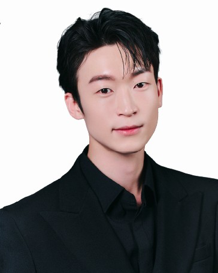
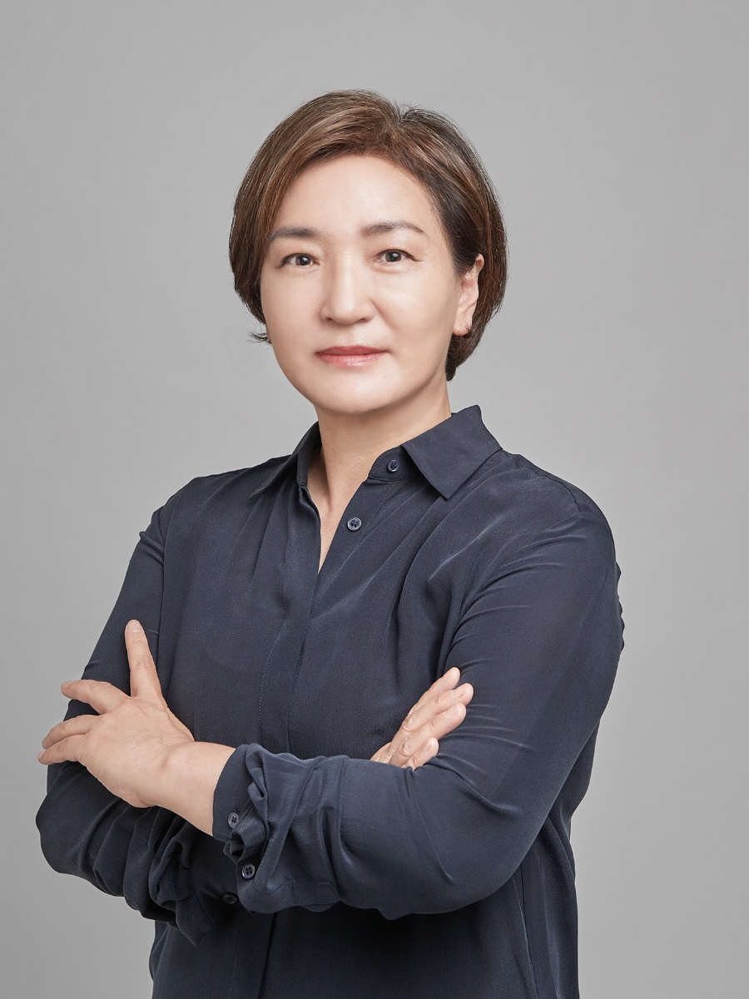
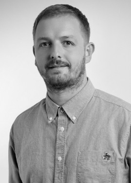
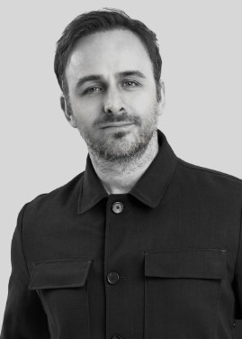

강사
가르치는 사람 5명

박진영
수석 강사 · 남성 커트
- 미용 경력 13년 · Men’s Cut Course 교육
- 현 데이앤헤어살롱 부원장
- London Sassoon Academy Men’s CUT&COLOR 강사 코스 수료
- 2024 Sassoon 70th Seminar & Collection 협업
「기초가 탄탄하면 응용할 수 있는 스타일이 다양해집니다. 또한 자신감, 자존감이 단단해 집니다.」

권신우
교육디렉터
- 미용경력 40년
- 뷰클래스아카데미대표
- 런던사순아카데미 한국공식 교육기관운영
- 24~25 사순 트렌드 한국컬렉션 주관사 운영
- 런던사순아카데미 라이브 온라인코스 운영
「배움은 현장에서 성과로 나타내야 합니다!」
김유정
여성 베이직 커트 주강사
- 미용경력 10년
- SASSOON티쳐스 트레이닝 수료
- (현) NCS 헤어전문 기술교육강사
- (현) 아히나헤어근무
「내일 당장 고객에게 쓸수 있는 실전은 연습 밖에 없습니다」

Riess Hatcher · 리스 해처
Academy Principal — 런던 사순 아카데미 교장 · 컬러리스트
- Sassoon 팀의 새로운 콘텐츠와 교육 강화의 개발 책임자.
- 사순의 새로운 교육 방식에 맞게 과정을 개발하고 컬러리스트 크리에이터로 활동합니다.

James Greaves · 제임스 그리브스
Creative Operational Director — 런던 사순 아카데미 크리에이티브 디렉터
- 크리에이티브 운영 디렉터로 과정 개발과 교육 자료 표준화를 맡고 있습니다.
- 국제적으로 활동하며 많은 커뮤니티에 사순의 기술을 공유하고 시연하고 있습니다.
수업 · 작품
수강생 실습과 수업 장면
01 / 17
오시는 길
서울 서대문구 신촌로 73 (창천동, 테라운드) 부속건물 3층